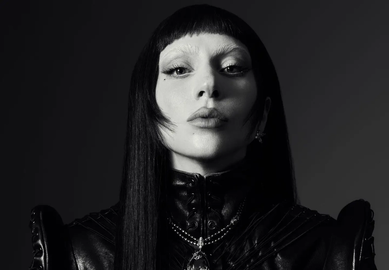
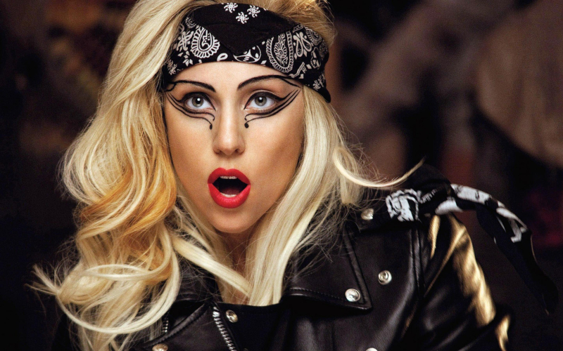

Caos criativo e a era Mayhem!
Poucos artistas conseguiram transformar estranheza em identidade como Lady Gaga. Desde o início da carreira, ela nunca quis apenas lançar músicas — o objetivo sempre foi criar universos. Moda, performance, narrativa visual e provocação caminham juntos em tudo o que ela faz.

Uma curiosidade que muita gente não sabe é que Lady Gaga estudou música clássica desde criança e compõe ao piano muito antes da fama. Mesmo quando mergulha no pop eletrônico, rock industrial ou estética caótica, existe uma base técnica forte por trás. O “exagero” nunca é vazio — ele é calculado.
Mother!
Mayhem é Lady Gaga em estado bruto. O álbum abraça o caos como linguagem, misturando pop sombrio, eletrônica agressiva e momentos quase confessionais.

Aqui, Gaga brinca com a desordem — emocional, estética e sonora — transformando excessos em identidade. As faixas transitam entre batidas industriais, melodias dramáticas e letras que falam de fama, desejo, dor e reinvenção, como se cada música fosse um palco diferente do mesmo espetáculo. Mayhem não pede ordem: ele convida o ouvinte a se perder, dançar no meio do caos e encontrar beleza justamente onde tudo parece fora de controle.
Sobre o fã:
Desde criança, fui fã dela. Comecei na MTV, numa época em que meu mundo ainda era pequeno demais e qualquer loira que aparecesse na TV eu achava que era ela. Minhas primeiras paixões vieram cedo: Alejandro, quando foi lançado, e Telephone, que vi pela primeira vez em um DVD antigo de uma prima mais velha que também gostava. Aquele DVD era quase um tesouro. Eu passava dias inteiros assistindo, repetindo, vivendo aquilo. No 7º ano do ensino fundamental, convenci uma professora de inglês a passar uma atividade sobre ela para a turma inteira. Foi um momento simples, mas inesquecível. Eu já me envolvia muito com a cultura pop, e Lady Gaga me fazia sentir mais vivo, mais atento ao mundo, mais eu. Hoje, inicio minha caminhada na programação, e meu primeiro site de portfólio não poderia ser sobre outra pessoa. Porque antes de código, antes de carreira, veio a inspiração. Dedicatória de um fã desde little monster: Miguel